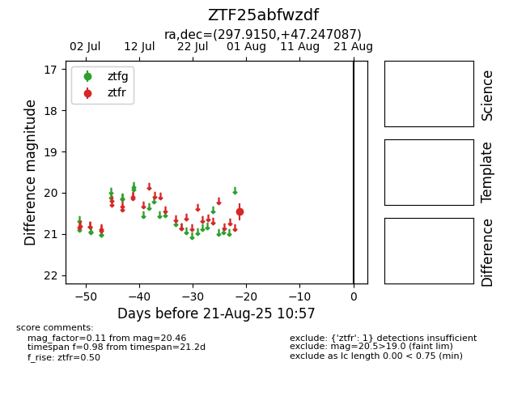

Target ZTF25abfwzdf at 2025-08-21 10:57, see:
FINK: fink-portal.org/ZTF25abfwzdf
Lasair: lasair-ztf.lsst.ac.uk/objects/ZTF25abfwzdf
ALeRCE: alerce.online/object/ZTF25abfwzdf
alt names
ZTF25abfwzdf (ztf,alerce)
coordinates:
equatorial (ra, dec) = (297.9150,+47.24709)
galactic (l, b) = (81.1604,+10.24690)
photometry
last ztfr=20.46
1 ztfr detections
